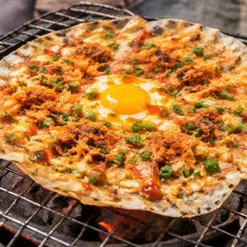

MÓN ĂN ĐƯỜNG PHỐ
Bánh tráng nướng
Lớp bánh tráng giòn rụm cùng trứng, hành lá và nhiều loại topping. Món ăn nóng hổi thường được gọi vui là “pizza Đà Lạt”.
TASTE THE HIGHLANDS
Hương vị phố núi – Ấm áp, mộc mạc và khó quên
KHÁM PHÁ NGAYDALAT CUISINE
Giữa tiết trời se lạnh của cao nguyên, những món ăn nóng hổi và nguyên liệu tươi ngon tạo nên sức hấp dẫn riêng cho ẩm thực Đà Lạt. Từ món ăn đường phố bình dị đến đặc sản mang đậm dấu ấn địa phương, mỗi hương vị đều góp phần làm nên trải nghiệm đáng nhớ.
MUST-TRY DISHES
Một chuyến đi Đà Lạt sẽ trọn vẹn hơn khi bạn dành thời gian thưởng thức những món ăn đặc trưng dưới đây.
Lưu ý: Ảnh minh họa được tải từ Unsplash; hình ảnh có thể không trùng khớp hoàn toàn với món ăn được mô tả.
FOOD EXPERIENCE
Thưởng thức bánh mì xíu mại hoặc bánh căn nóng hổi.
Dạo chợ, khám phá các món ăn vặt và thưởng thức dâu tây.
Quây quần bên nồi lẩu gà lá é hoặc thưởng thức bánh tráng nướng.